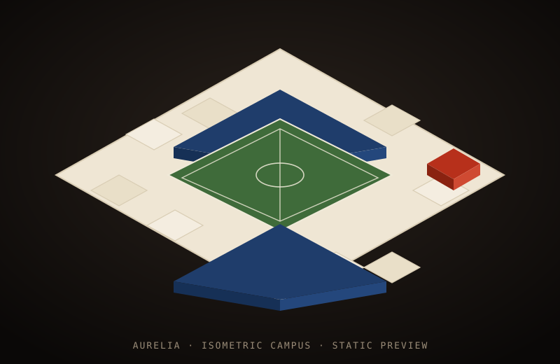

Isometrischer Campus wird mit Babylon.js aufgebaut …

3D-Ansicht nicht verfügbar — statische Vorschau. Zurück zum Hub oder zum Stadion-Studio.
Babylon
FPS—
Meshes—
Tris—
Drag drehen ·
Scroll Zoom ·
Rechte Maustaste verschieben ·
←→ drehen · Space Umlauf